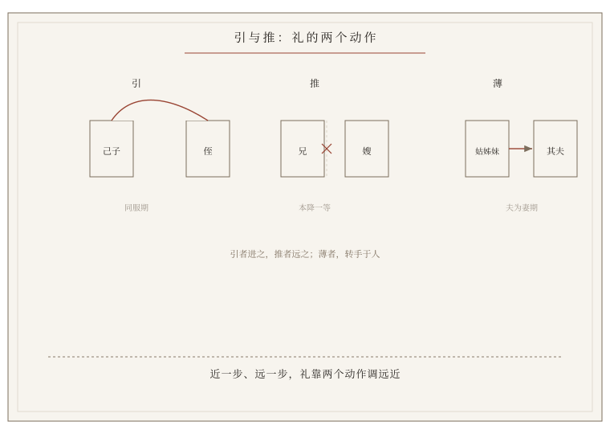

檀弓上 · 三·七十一 · 第 274 课
喪服，兄弟之子猶子也，蓋引而進之也。嫂叔之無服也，蓋推而遠之也。姑姊妹之薄也，蓋有受我而厚之者也。
说什么事：丧服里有三条特别的安排：兄弟的儿子按自己的儿子服；嫂嫂与叔子之间不服；姑母姊妹出嫁后服得薄。
落在哪一层：礼制之细目，兼及礼意。论「引」与「推」两字——礼以两个动作调远近。
为何编在此位：上节论丧具之备，此节转入丧服之制。自此以下数十节，多论服制之变与礼之空白，此节为其发端：先立「引」「推」二义。
【经】喪服，兄弟之子猶子也，蓋引而進之也。嫂叔之無服也，蓋推而遠之也。姑姊妹之薄也，蓋有受我而厚之者也。
【注】或引或推，重親遠別。姑姊妹嫁大功，夫為妻期。
【疏】《丧服》是《仪礼》正经，记者录其中下三事，各以释之。其兄弟之子期、姑姊妹出適大功，皆《丧服》经文；嫂叔无服，《丧服》传文。所以嫂叔无服进在姑姊妹之上者，取「或引或推」二者相对：其子服重，是引而进之；其嫂无服，是推而远之。并云「盖」者，记人虽解其义，犹若不审然，故谦而言「盖」。已子服期，昆弟之子应降一等服大功，今乃服期，故云「引」；昆弟相为服期，其妻应降一等大功，今乃使之无服，是推使疏而斥远之。何平叔云：「夫男女相为服，不有骨肉之亲，则有尊卑之异也。嫂叔亲非骨肉，不异尊卑，恐有混交之失，推使无服也。」姑姊妹未嫁之时为之厚，出嫁之后为之薄，盖有夫婿受我之厚而重亲之，欲一心事于厚重，故我为之薄。
犹子 同于己子。兄弟之子本服期，与己子同。
引而进之 牵引进之，使之近。引，牵引。进，使前。
推而远之 推使疏远。推，推却。远，斥远。
无服 不服丧服，即不在五服之内。
薄 服轻。姑姊妹在室服期，出嫁降为大功。
受我而厚之者 承受我原先那份厚情的人——指其夫。夫为妻服期，故我为之薄。
盖 疑辞，记礼者谦言「大概如此」。
丧服之制：兄弟的儿子，按自己的儿子服；嫂嫂与叔子之间不服；姑母姊妹出嫁之后服得薄了。
兄弟之子所以同于己子，是把他牵引过来、使近；嫂叔所以无服，是把他推却出去、使远；姑姊妹所以薄，是因为有承受我那份厚情的人在。
此节一句经、一句注、三个「盖」，说的是一件事：礼的远近不是按感情量的，而是按名分调的，调法只有两个动作——引与推。
疏把三条的算术摆得很清楚：己子服期，兄弟之子按理该降一等服大功，今却服期，这是「引」；兄弟相为服期，其妻按理该降一等大功，今却无服，这是「推」；姑姊妹在室服期，出嫁降大功，这是「薄」，薄的理由是「有受我而厚之者」。
三条都不是「多给一点」或「少给一点」，而是把一个关系往近处拽一步、往远处推一步。礼的整套精密，就建立在这两种动作上。
第一层 引：把侄子当儿子 这一步拽得很实。己子与侄子在血脉上差一层，礼却把这一层抹平。抹平的理由，疏只说「牵引进之，同于己子」，不再解释——因为在宗法社会里这是一条公理：兄弟一体，兄弟之子即我之子。引，不是恩上加恩，是本已如此。
第二层 推：把嫂子推出去 这一步推得也实。何平叔（何晏）说得最直：「嫂叔亲非骨肉，不异尊卑，恐有混交之失，推使无服也。」亲非骨肉——不是血亲；不异尊卑——又没有上下之分可以隔开。两条都没有，就只剩男女之别，所以索性推远，用「无服」造出一道墙。
这是礼最冷的一处，也是最坦白的一处：它把「防」写进了服制里。但要注意，推远的是「服」，不是「情」。《礼记》他处屡言嫂叔之敬，此节只断其服，不断其礼。
第三层 薄：把姑姊妹交给她的夫 这一条最见礼的用心。姑姊妹出嫁，我为之由期降大功，服薄了；为什么薄？因为「有受我而厚之者」——她的夫替我把那份厚接了过去（夫为妻期）。我不是薄待她，是知道有人比我更该厚她。
这三层的次序也有讲究：疏说嫂叔无服「进在姑姊妹之上」，因为「或引或推，二者相对」——引与推是一对，先说这一对，再说那个「转手」的薄。
第四层 三个「盖」的分量 疏特意指出：这三条并云「盖」，「记人虽解其义，犹若不审然，故谦而言盖」。礼书写理由，用的是「大概」「想来」。这不是含糊，是一种分寸：制可定，意不可死。把理由说成「盖」，就留下了后人重新体认的余地。
与今日何干 今人处理亲疏，多用「感情深浅」一把尺。此节提醒：还有一把尺叫「名分」，它靠两个动作运转——该近的拽一步，该远的推一步，该转手的交给更该承担的人。感情会变，名分不动；两者不混，人才不至于在每一次亲近与疏远里都重新算一遍。
| 左 | 右 |
|---|---|
| 兄弟之子犹子 | 引而进之 |
| 已子服期 | 侄亦服期 |
| 嫂叔无服 | 推而远之 |
| 亲非骨肉、不异尊卑 | 恐有混交之失 |
| 姑姊妹之薄 | 出嫁降大功 |
| 受我而厚之者 | 其夫为妻期 |
| 引与推 | 二者相对 |
| 三个「盖」 | 记礼者谦言不审 |
画一座祠堂前的石阶，视点略俯。阶上排着三组人与位：正中一位男子（深衣）身旁立一少年（稍矮，同向），两人之间地上并置两只同样的素麻垫；右侧一位妇人（素衣、背向）与一位男子（深衣、正面）之间隔着一道矮石栏，两人各立一边，栏上空无一物；左侧一位女子（素衣、发髻简）正被一双手（只画手，从画面边缘伸入）牵向画外，她回头看。不写文字、不画人面细节。赭色只用在两只并置麻垫的边线，与那道矮石栏的栏顶。
